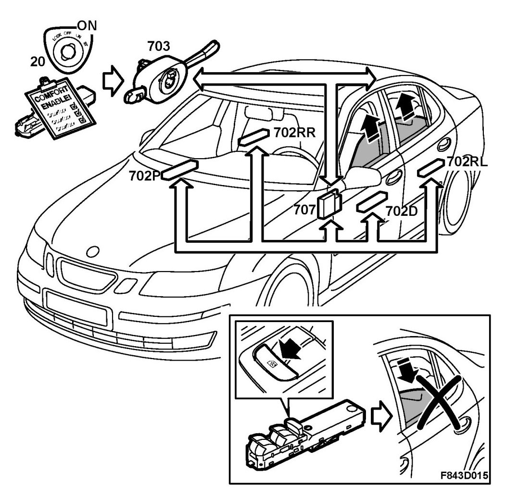
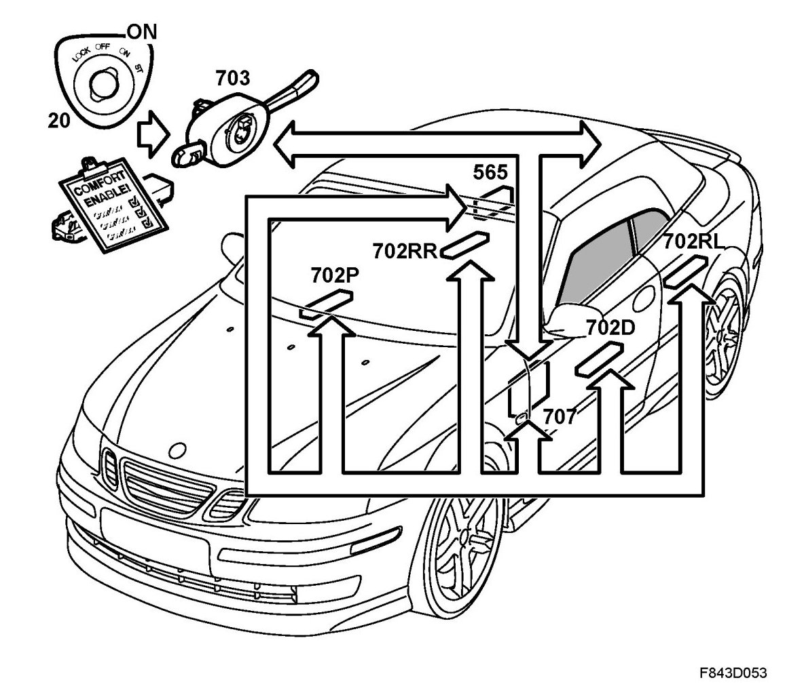

Electrically Operated Window Lifts, Brief Description
Electrically Operated Window Lifts, Brief Description
Overview, 4D, 5D

- Driver's door module, DDM (702D)
- Motor, electrically operated window lift, driver door (164D)
- Passenger door module, PDM (702P)
- Motor, electrically operated window lift, passenger door (164P)
- Rear left door module, RLDM (702RL)
- Motor, electrically operated window lift, left-hand rear door (164RL)
- Rear right door module, RRDM (702RR)
- Motor, electrically operated window lift, right-hand rear door (164RR)
- Control module, BCM (707)
- CIM (703)
- ECM
Overview, CV

- Driver's door module, DDM (702D)
- Motor, electrically operated window lift, driver door (164D)
- Passenger door module, PDM (702P)
- Motor, electrically operated window lift, passenger door (164P)
- Rear left door module, RLDM (702RL)
- Motor, electrically operated window lift, rear, left-hand (164RL)
- Rear right door module, RRDM (702RR)
- Motor, electrically operated window lift, rear, right-hand (164RR)
- Control module, BCM (707)
- CIM (703)
- ECM
- Control module, STC (565)
Description
All 4 doors have electric windows, which are available with "express closing". For the express closing variant, the motor has 2 Hall sensors for determining position, and the window switches connected to the door control module have 2 positions for closing. Pinch protection is active during express closing.
The DDM has buttons for controlling all the doors' windows and a button for deactivating the rear door window switches. This button is also used to override the door window and sunroof pinch protection. To override the pinch protection, the button must be depressed at the same time as the window is operated from the driver's door. The passenger door control modules have only one button for operating their respective window lifts.
When the soft top is retracted the side windows are fully lowered. When the soft top is raised the side windows are lowered slightly.